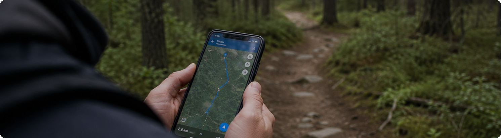
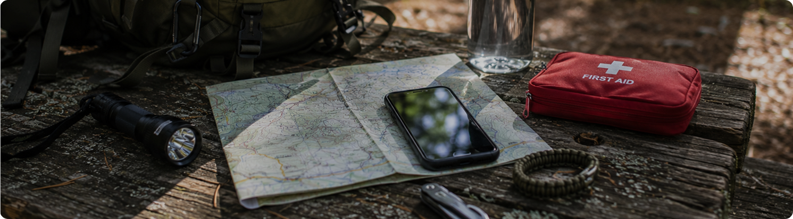

Перед выходом в лес большинство проблем можно предотвратить ещё дома. Даже короткая прогулка становится безопаснее, если заранее изучить маршрут, проверить погоду и определить ориентиры на местности.
Планирование не требует много времени, но помогает избежать ситуаций, когда приходится искать дорогу обратно в темноте, обходить труднопроходимые участки или менять маршрут из-за погодных условий.
Почему важно планировать маршрут заранее
Многие считают, что заблудиться можно только в большом лесу. На практике потерять ориентиры можно даже рядом с парковкой или знакомой тропой.
Заранее подготовленный маршрут помогает контролировать время прогулки, понимать своё местоположение и быстрее принимать решения в непредвиденных ситуациях.

На что обратить внимание перед выходом
Несколько минут подготовки помогут избежать большинства проблем на маршруте и сделать прогулку более предсказуемой.
Погода
Проверь прогноз и вероятность осадков, сильного ветра или грозы
Время
Рассчитай маршрут так, чтобы вернуться до наступления темноты
Связь
Убедись, что телефон заряжен и маршрут доступен офлайн без интернета
После подготовки основных данных можно переходить к планированию самого маршрута.
Что стоит определить заранее
Точка старта
Место, откуда начинается прогулка и куда легко вернуться
Основной маршрут
Главная тропа или последовательность ориентиров
Контрольные точки
Перекрёстки, просеки, мосты и другие заметные объекты
Точка разворота
Место, после которого необходимо начинать обратный путь
Запасной выход
Альтернативный маршрут при изменении условий
Время возвращения
Ориентировочное время завершения прогулки
Перед выходом сообщи близким, куда направляешься и когда планируешь вернуться. Даже короткая прогулка становится безопаснее, если кто-то знает твой маршрут

Когда стоит изменить планы
Иногда лучшим решением становится перенос прогулки.
Гроза
Лучше временно перенести маршрут до улучшения погоды, если началась гроза
Поздний выход
Если времени до заката осталось мало, сократи маршрут
Cамочувствие
Не отправляйся далеко от населённых пунктов, если плохо себя чувствуешь
Подготовленный маршрут не делает прогулку сложнее — наоборот, помогает чувствовать себя спокойнее и больше внимания уделять природе вокруг.
Несколько минут подготовки перед выходом помогают избежать большинства проблем в лесу. Чем лучше продуман маршрут, тем спокойнее и безопаснее проходит прогулка